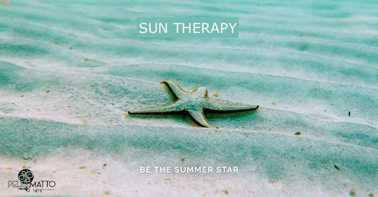

CAPELLI DA STAR IN ESTATE !!
Cosa fare per avere capelli splendenti anche in estate.
Come evitare di danneggiare i capelli durante l’estate ma esaltarne la bellezza prima, durante e dopo le ferie.
{kind=link}
Gli effetti del sole sui capelli possono essere dannosi tanto quanto quelli sulla pelle. 😡
NON TRATTARE I CAPELLI CON SEMPLICI GESTI SIGNIFICA DOVER FARE I CONTI CON DOPPIE PUNTE, DISIDRATAZIONE, INDEBOLIMENTO.
Quante volte ti è capitato di arrivare a fine estate con i capelli indomabili, sbiaditi, rovinati pieni di doppie punte? Quante volte hai dovuto arrenderti all’evidenza e ricorrere tuo malgrado ad un taglio drastico? 😫
I danni del sole non riguardano solo la pelle del corpo ma anche i capelli subiscono gli effetti negativi dei raggi ultravioletti.
COSA ACCADE?
I raggi ultravioletti danneggiano la cheratina indebolendo il fusto con conseguente:
- DISTRUZIONE DEI PIGMENTI DI MELANINA - provoca schiaritura e sbiadimento del colore naturale e artificiale;
- MODIFICAZIONE DELLE PROTEINE DELLA CUTICOLA - provoca aumento della porosità con conseguente effetto di perdita di luminosità, capello sfibrato, opaco con doppie punte;
- DISIDRATAZIONE - provoca secchezza e fragilità quindi il capello si spezza più facilmente.
COSA FARE?
La cosa principale è la cura! Il trattamento che devi riservare ai capelli in estate dev’essere costante per evitare di arrivare a fine stagione con una chioma danneggiata. A differenza della pelle che ha la capacità di rigenerarsi, i capelli troppo sfibrati sono difficilmente recuperabili in breve tempo.
Per vivere un’estate in piena libertà e sicurezza abbiamo creato un percorso benessere per i tuoi capelli
🔅🔅SUN THERAPY🔅🔅
I prodotti che abbiamo selezionato per la tua home care sono tutti naturali, ricchi di sostanze funzionali derivate da piante e fiori da agricoltura biologica
- FLOWER HAIR OIL - proteggili al mare, in montagna e in piscina più volte durante l’esposizione con questo mix di oli di piante e fiori;
- SOFTENING SHOWER GEL - uno shampoo-doccia delicato e rinfrescante per riequilibrare cute e pelle dopo l’esposizione;
- SOFTENING HAIR MASK - per ridare idratazione e nutrimento allo stelo;
- ANTIAGING HAIR SPRAY - elisir idratante, antiossidante per illuminare, dare corposità e profumare delicatamente i capelli.
I trattamenti che ti proponiamo in salone (previa consulenza) per dare ai tuoi capelli e alla tua cute la giusta idratazione e nutrimento, sono formulati con sostanze vegetali, piante, fiori e oli puri 100% bio
- OLIAZIONE - colata tiepida di oli scelti in base alla tipologia di cute e capello. Và a ridare elasticità e idratazione alla cute e allo stelo;
- BEAUTY OIL - trattamento di bellezza per dare idratazione e nutrimento allo stelo favorendo elasticità e spessore al capello;
- TRATTAMENTO TERRA - per dare una cosmeticità immediata al capello tramite un impacco caldo umido e un preparato ristrutturante ricco di oli essenziali;
- ORGANIC HAIR THERAPY - trattamento di cheratina vegetale ideale per capelli danneggiati e crespi, penetra fino al cuore del capello, ottenendo un risultato di bellezza straordinario; la cheratina vegetale è l’ultima frontiera della ricerca "green cosmetic".
COSA OTTIENI?
I benefici che otterrai seguendo un giusto percorso di bellezza per i tuoi capelli sono innumerevoli:
- lucentezza;
- morbidezza;
- colore che si mantiene più a lungo;
- eviti la formazione delle doppie punte;
- idratazione
- pettinabilità
- ma soprattutto eviterai un bell’ “impacco di forbici” ✂ ✂ a fine estate !!
🎁Per ogni kit prodotti acquistato, in omaggio una crema corpo idratante o una crema solare (Fino esaurimento scorte).
🎁Ogni tre trattamenti in salone uno è in omaggio.
ALLORA COSA ASPETTI ?
SE VUOI FAR RISPLENDERE 💎 I TUOI CAPELLI CHIAMA ORA PER LA TUA CONSULENZA GRATUITA E PRENOTA IL TUO SUN THERAPY PER L'ESTATE !!!